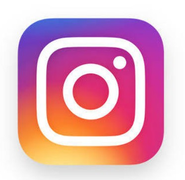

Story 1
Instagram,kevin Systrom(co-founder & CEO of instagrams ):
the globally famous photo app, was founded by Stanford University graduate, Kevin Systrom who was born in a very common family and was a tech genius. He was in school when he was introduced to tech and used to learn coding by himself at night. He started working on an app which was more or less a cross between Foresquare and Flickr. Very few people know that Mark Zuckerburg wanted to hire him while he was undergraduate but he denied the offer as he wanted to complete his degree. Kevin, along with his friend Mike, spent eight weeks aggressively on developing this app And finally on the night of October 6, 2010, they pushed the launch button! Only after two hours of Instagram going LIVE, its servers started falling down because of rush of traffic and within 24 hours it became #1 app on iOS. Within nine months, Instagram had a record-breaking 7 million users, which also included some of the highly-influential tech-loving celebrities like Justin Bieber and Ryan Seacrest.
Story 2

Infosys,(Narayana Murthy,Sudha Murthy):
Infosys :
Startup Story The Infosys startup story came into existence in 1981. It was founded by the former employees of Patni Computer Systems. They started the company with a meagre amount of INR 10,000 and named it Infosys Consultants.
Sudha Murthy gave this amount to her husband. The company began with a small office room. It was the front room of Murthy's home and the registered office was Raghavan's home. The company didn't have any computer till 1983 because they couldn't
afford it. It took them two years to buy a computer on their own and the model was Data General 32-bit MV8000. Infosys - Founders And Team N.R. Narayana Murthy, Nandan Nilekani, S.D. Shibulal, Kris Gopalakrishnan, Ashok Arora, N.S. Raghavan
and K. Dinesh are the founders of the company. Narayana Murthy is an Indian billionaire businessman and the co-founder of Infosys. Nandan Nilekani is an Indian entrepreneur. He is the Non-Executive Chairman of Infosys. S.D. Shibulal is an
Indian business executive. He is the CEO and Managing Director of Infosys. Kris Gopalakrishnan is the former executive vice-chairman of Infosys. Currently, he is the Chairman of Axilor Ventures. Ashok Arora is also a founder of Infosys. N.S.
Raghavan is an Indian industrialist. He is one among the founders of Infosys. K.Dinesh is the co-founder of Infosys. He completed his education from Bangalore University.
Story 3

Microsoft:
Microsoft:
Founded in 1975, Microsoft (Nasdaq “MSFT” @microsoft) is the leading platform and productivity company for the mobile-first, cloud-first world, and its mission is to empower every person and every organization on the planet to achieve
more. Microsoft set up its India operations in 1990. Today, Microsoft entities in India have over 10,000 employees, engaged in sales and marketing, research, development and customer services and support, across 11 Indian cities – Ahmedabad,
Bangalore, Chennai, New Delhi, Gurugram, Noida, Hyderabad, Kochi, Kolkata, Mumbai and Pune. Microsoft offers its global cloud services from local data centers to accelerate digital transformation across Indian start-ups, businesses, and government
organizations.